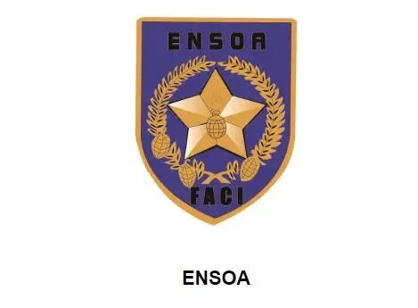
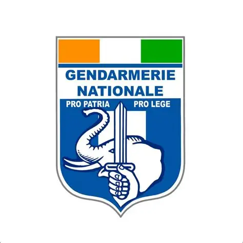
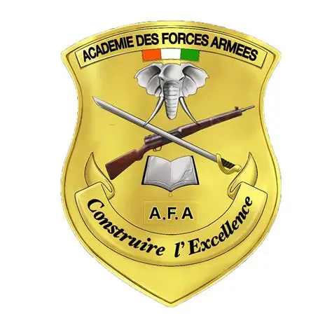
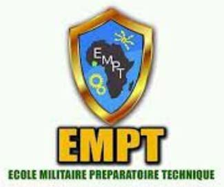

Les Forces Armées de Côte d'Ivoire (FACI) organisent chaque année plusieurs concours de recrutement afin d'intégrer les écoles militaires et les corps spécialisés de l'armée ivoirienne. Ces concours offrent des opportunités de carrière dans l'armée de terre, la gendarmerie, les services techniques et les corps de commandement.

L'École Nationale des Sous-Officiers d'Active (ENSOA) recrute des candidats destinés à devenir sous-officiers polyvalents. La formation porte sur la discipline militaire, le commandement, l'instruction générale et la préparation opérationnelle.
Ce concours est destiné aux candidats possédant des compétences techniques ou professionnelles. Les spécialités peuvent inclure l'informatique, les télécommunications, l'électronique, la maintenance ou d'autres métiers techniques.

La Gendarmerie Nationale recrute des sous-officiers chargés de missions de sécurité publique, de police judiciaire, de maintien de l'ordre et de protection des personnes et des biens.

L'Académie des Forces Armées (AFA) recrute des élèves officiers destinés à exercer des fonctions de commandement au sein des forces armées.
Ce concours est réservé aux étudiants en médecine ou aux titulaires des diplômes médicaux requis. Les admis suivent une formation militaire complémentaire avant d'exercer comme médecins militaires.

L'École Militaire Préparatoire Technique (EMPT) accueille de jeunes élèves pour une formation scolaire et militaire préparant à une future carrière dans les forces armées.
Consultez la liste des concours disponibles et suivez les échéances de la session 2026.
Voir les concours disponibles